Contents
- Functional Magentic Resonance Imaging (fMRI) & Hemodynamic Response Function (HRF)
- Interlude: Spatial and Temporal Resolution in fMRI
- The Brain as a Linear System: Single Stimulus Presentation
- The Brain as a Linear System: Multiple Stimulus Presentations
- Differential Neuronal Response to Stimuli: Example 1
- Convolved Differential Neuronal Response to Stimuli: Example 1
- Differential Neuronal Response to Stimuli: Example 2
- Convolved Differential Neuronal Response to Stimuli: Example 2
- Neuronal Tuning Functions: Characterizing Differential Neuronal Responses
- The Brain as a Linear System: Combining All the Pieces
- Population Receptive Field (pRF) Modeling
- Estimating the pRF Model With and Without Noise in the System
- Inverting the Question: Decoding the Stimulus
- Decoding Matrix: A Single Voxel
- Convolved Decoding Matrix: A Single Voxel
- Create a New Stimulus Matrix to Decode
- Decoding the Test Stimulus Matrix: A Single Voxel
- Calculate the Best Lag
- Decoded Stimulus
- Estimating a Voxel-Wise pRF Model for Multiple Voxels
- Decoding Matrix: Multiple Voxels
- Convolved Decoding Matrix: Multiple Voxels
- Decoding the Test Stimulus Matrix: Multiple Voxel
- Calculate the Best Lag
- Decoded Stimulus: Multiple Voxels
- Conclusion
- References
% Neuro545FinalProjectKC1.m clear all; close all; addpath(genpath(pwd));
Functional Magentic Resonance Imaging (fMRI) & Hemodynamic Response Function (HRF)
Functional Magentic Resonance Imaging (fMRI) is an imaging technique that uses a powerful electro-magnet that is able to detect changes within the magnetic field it generates. Using fMRI, we are able to collect an indirect measure of neuronal activitiy due to the fluctations in blood flow when a region of the brain has been activated.
Neurons require oxygen to fuel their activity and oxygen is carried to the neurons via the hemoglobin in red blood cells. When there is an increase in neuronal activity, there is an increase of blood flow to that region of cortex. After the hemoglobin has become deoxygenated, the hemoglobin is briefly paramagnetic. This change in magnetic property can be detected by the electro-magnet. This is why fMRI is also known as Blood Oxygen Level Dependent (BOLD) Imaging.
The BOLD response can be approximated by the Hemodynamic Response Function (HRF). For this tutorial's purposes a gamma function, which is the result of an n stage leaky integrator, will be used to represent the BOLD response as a function of time (t):
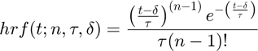
Or in MATLAB:
hrf(t;n,tau,delta) = ((t-delta)/tau).^(n-1).*exp(-(t-delta)/tau)/(tau*factorial(n-1))
where n is the phase delay, 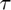 is the time constant, and 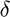 is the delay in seconds.
The HRF varies in the cortex from region-to-region and from person-to-person, but there are canonical HRF parameters for highly studied regions, such as primary visual cortex (V1).
opt.n = 3; % phase delay opt.tau = 1.5; % time constant opt.delta = 2.5; % delay, seconds t = linspace(0,30,1000); % time hrf = gammaHRF(opt.n, opt.tau, opt.delta, t); figure1(t, hrf);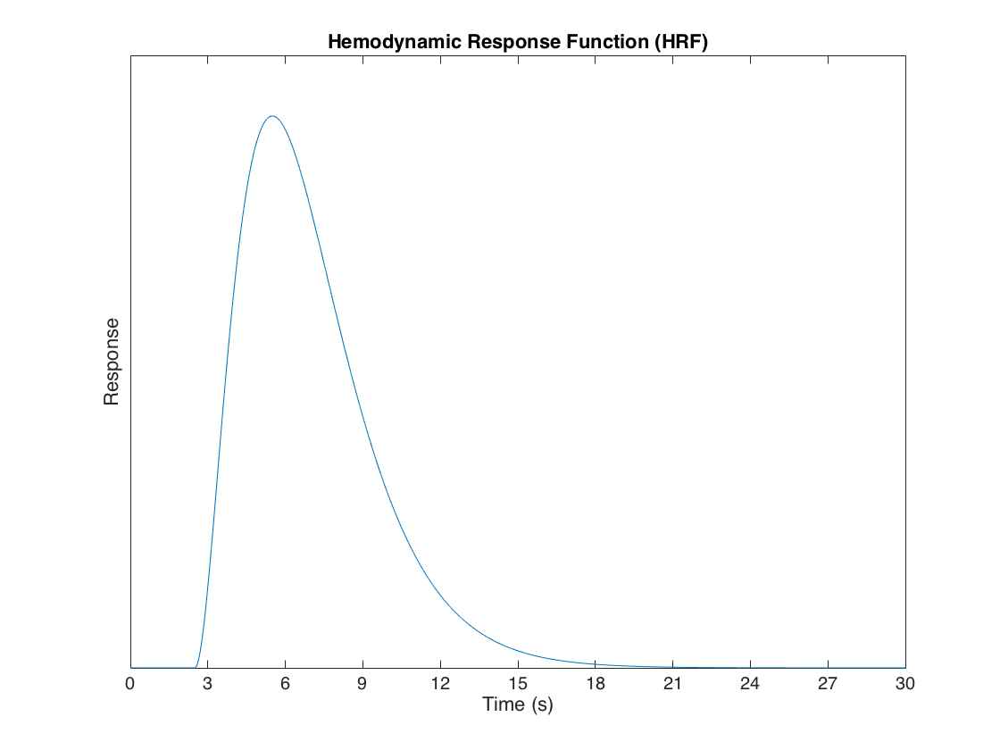
Figure 1.
A plot of a canonical V1 HRF.
Interlude: Spatial and Temporal Resolution in fMRI
fMRI is known as a technique with decent spatial resolution but poor temporal resolution. This is addressed currently to introduce a few terminologies that will continue forth throughout the tutorial.
Spatial resolution in fMRI is spoken about in terms voxel (volume element) size. If we think of the brain as a pixelated three-dimensional mass, a pixel in that 3D mass is a voxel. A voxel contains a collection of hundred thousands of neurons, though this varies. Voxel resolutions typically range from 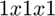 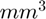 to 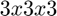 . MRI, or Magnetic Resonance Imaging, is used to image the anatomy (structure) of the brain and is usually collected at a resolution. Structural scans are unconcerned with the activity (function) that occurs, and is used throughout the medical profession. Whereas fMRI (functional scans), are typically collected at to compensate for the fact that functional activity has to be collected through time and this taxes the electro-magnet's ability to accurately collect data at finer resolutions.
Temporal resolution in fMRI is poor. Not only is the measure obtained by fMRI an indirect measure, the BOLD response is also notoriously slow. The BOLD response peaks around 4 to 5 seconds (depending) after stimulus presentation. On top of that, the time course can only be sampled every few seconds due to the electro-magnet's limitations. Time to repetition, or TR, is the sampling rate at which the BOLD response time course can be collected. A common TR is 2 seconds, which is what this tutorial uses. At each TR, the fMRI acquires a volume, which is a snap shot of the brain at that TR. Occasionally, this tutorial will refer to the time domain in units of TRs or volumes.
The Brain as a Linear System: Single Stimulus Presentation
impulse = zeros(length(t),1);
impulse(100,1) = 1; % 3 seconds
response = conv(impulse, hrf(:));
response = response(1:length(t));
figure2(t, impulse, hrf, response);

Figure 2.
Let's pretend we presented a single stimulus at 3 seconds and the population of neurons in a voxel responds maximally to this particular stimulus. The BOLD response we would collect would be the convolution of the neuronal response and the HRF.
The Brain as a Linear System: Multiple Stimulus Presentations
impulse = zeros(length(t),3); impulse(100,1) = 1; % 3 seconds impulse(200,2) = 1; % 6 seconds impulse(300,3) = 1; % 9 seconds neural = impulse; neural(300,3) = 0.5; response = cellfun(@(x) conv(x,hrf), num2cell(neural,1), 'UniformOutput', false); response = cell2mat(cellfun(@(x) x(1:length(t))', response, 'UniformOutput', false)); figure3(t, impulse, neural, hrf, response);

Figure 3.
Now let's pretend we presented the same stimulus as before but this time at 3, 6, and 9 seconds. The neuronal population responds maximally to this particular stimulus at the first two presentation, but at half strength by the third presentation (possibly an adaptation effect). In the bottom panel of Figure 3. Each dashed red line represents the convolution of the HRF and the voxel response to an individual stimulus (dashed red), but the measured BOLD response would the linear summation of all the indivudual responses (blue).
Differential Neuronal Response to Stimuli: Example 1
opt.TR = 2; % TR, seconds opt.stimuli = 1:6; % different stimulus types paradigm = [opt.stimuli(1:(length(opt.stimuli)/2)) NaN(1,6) ... opt.stimuli(((length(opt.stimuli)/2)+1):end) NaN(1,6)]; % paradigm sequence opt.nVols = length(paradigm); % number of volumes opt.cMap = hsv(length(opt.stimuli)) * 0.85; % color map t = 0:opt.TR:30; % time in opt.TR steps hrf = gammaHRF(opt.n, opt.tau, opt.delta, t); stimulusMatrix = zeros(length(opt.stimuli), opt.nVols); for i = 1:length(paradigm) if ~isnan(paradigm(i)) stimulusMatrix(:,i) = opt.stimuli == paradigm(i); end end neural = [1 1 1 0.5 0.5 0.5]; % neural response to each stimuli [stimulusImpulse] = figure4(stimulusMatrix, neural, opt);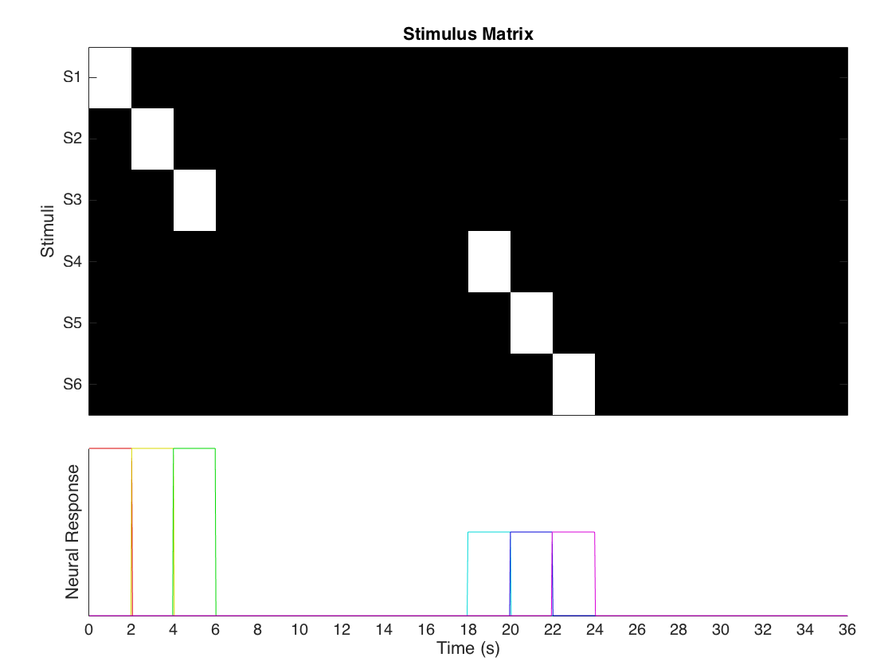
Figure 4.
Top. If we are presenting multiple types of stimuli, then we can represent which stimulus (1-6) was presented and when with a stimulus matrix. Each stimulus is identified by the row it inhabits and when a stimulus was presented can be viewed along the columns of the matrix. This creates a [number of stimuli, number of volumes] matrix.
Bottom. The neural response can still be visualized as before. In this example, stimulus 1, 2, and 3 evoke a strong response from this population of neurons, but only a half maximum response from stimuli 4, 5, and 6.
Convolved Differential Neuronal Response to Stimuli: Example 1
convolvedMatrix = opt.TR * convn(diag(neural)*stimulusMatrix, hrf); convolvedMatrix = convolvedMatrix(:,1:opt.nVols); figure5(convolvedMatrix, stimulusImpulse, opt)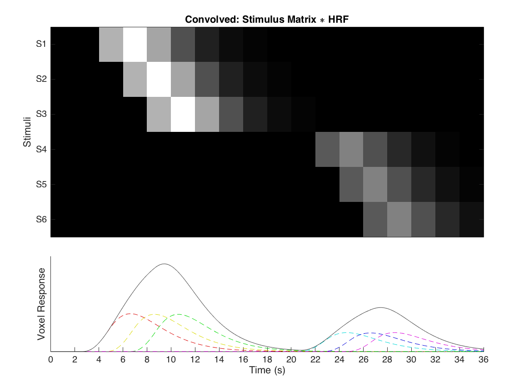
Figure 5.
Top. The Convolved Matrix is the convolution of the stimulus matrix and the HRF in time also weighted by the neuronal response to each stimulus. Note that for stimulus 1, 2, and 3, the response is stronger (whiter) than the response to stimulsu 4, 5, and 6. The Convolved Matrix has been truncated to remain within the number of volumes that was acquired during the fMRI session.
Bottom. The final BOLD response (gray line) is the linear summation of the individual responses to each stimulus (colored lines). Note that similarly to the convolved matrix, the responses to stimulus 4, 5, and 6 are half of the response to stimulus 1, 2, and 3.
Differential Neuronal Response to Stimuli: Example 2
Let's take a look at what would happen if the neuronal response changes but the stimulus matrix is kept the same.
opt.mu = 3; opt.sigma = 1; tuning = gaussian(opt.mu, opt.sigma, opt.stimuli); [stimulusImpulse] = figure6(stimulusMatrix, tuning, opt);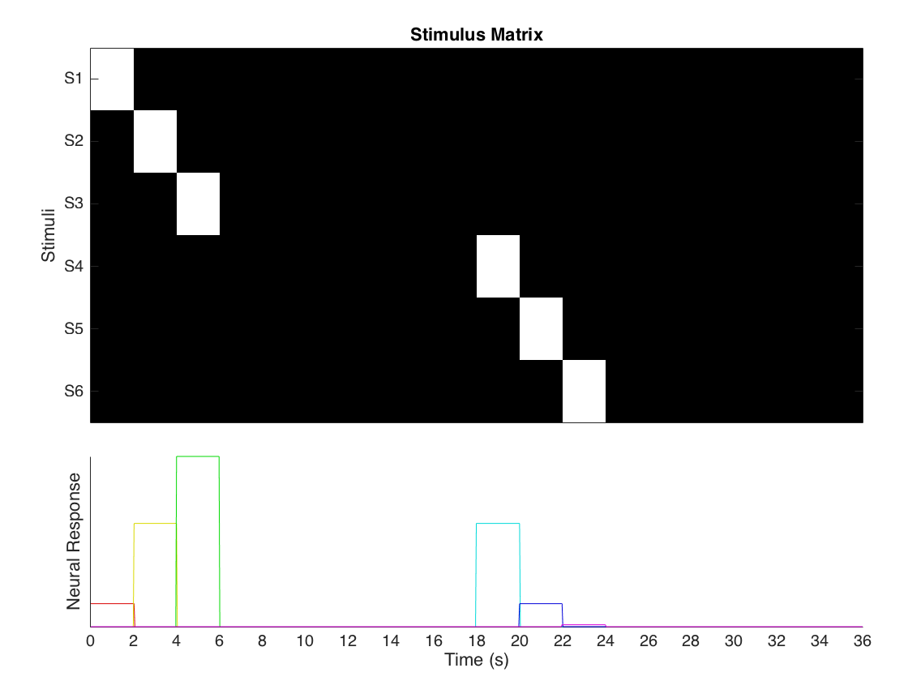
Figure 6.
Top. The same stimulus matrix as in Figure 4.
Bottom. The intersting thing to note is that there is a differential neuronal response to the each stimulus that is different from the previous example. Stimulus 3 evokes the strongest response from this neuron, then stimulus 2 and 4, and stimulus 1, 5, and 6 barely activate the voxel.
Convolved Differential Neuronal Response to Stimuli: Example 2
convolvedMatrix = opt.TR * convn(diag(tuning)*stimulusMatrix, hrf); convolvedMatrix = convolvedMatrix(:,1:opt.nVols); figure7(convolvedMatrix, stimulusImpulse, opt);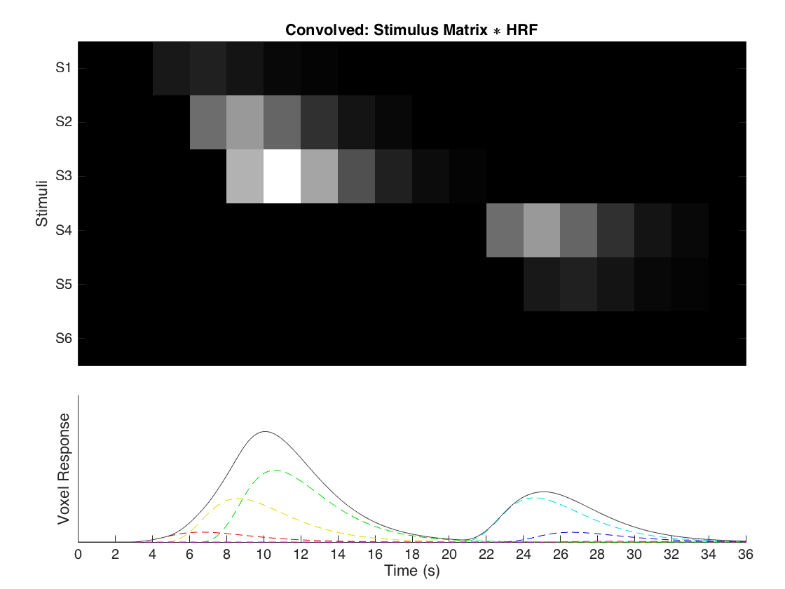
Figure 7.
Top. The convolved matrix for this same stimulus matrix but with different neuronal weighting of each stimulus. Note that for stimulus 3 has the greatest response (whiter) than all other stimuli.
Bottom. The final BOLD response (gray line) is the linear summation of the individual responses to each stimulus (dashed colored lines). The voxel responsed the strongest to stimulus 3 (green), or in other words, it can be said that this voxel 'prefers' stimulus 3.
Breaking down the BOLD response, stimulus 3 contributes the most to the first BOLD response bump and stimulus 4 (light blue) contributes the most to the second BOLD response bump.
Neuronal Tuning Functions: Characterizing Differential Neuronal Responses
figure8(stimulusMatrix, neural, tuning, opt);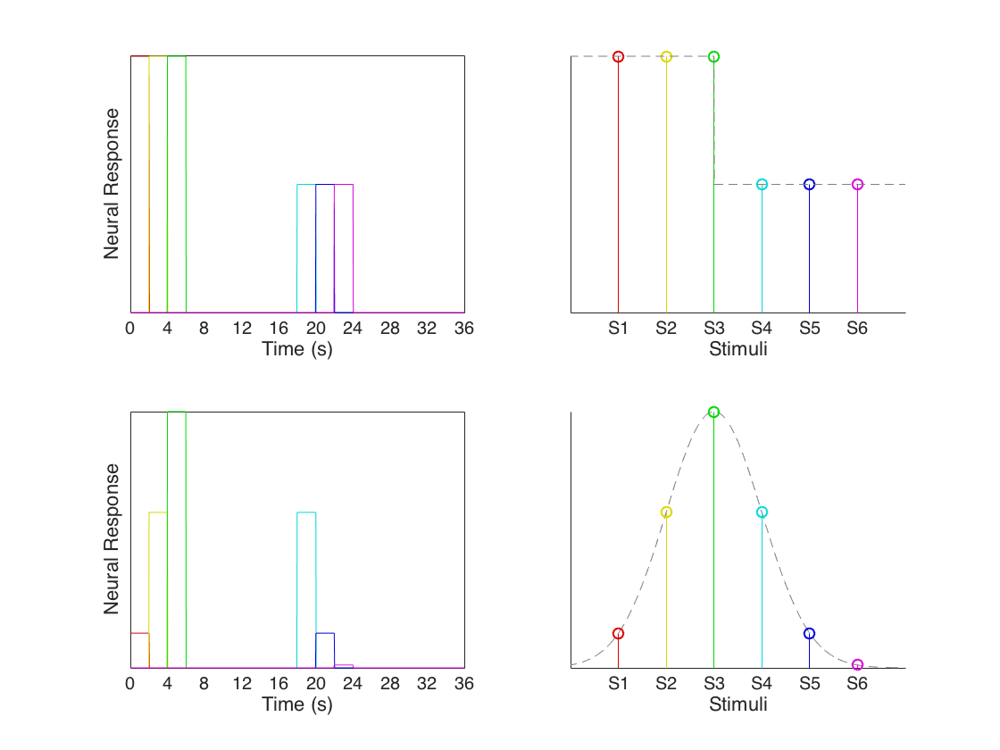
Figure 8.
Left. The same neuronal responses from Figures 4 and 6 respectively.
Right. If we plot the neuronal response as a function of the stimulus space instead of as a function of time (left), we arrive at the stem plots on the right, where each color represents a particular stimulus. We can characterize the differential neuronal response to the given stimulus space with functions (dashed gray). The top right resembles a step function and the bottom right resembles a one-dimensional Gaussian (as it should, this neuronal tuning function was generated with a 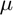 (center) of 3 and a 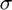 (spread) of 1).
The Brain as a Linear System: Combining All the Pieces
Now let's put all the pieces together.
[convolvedMatrix,responseMatrix] = figure9(stimulusMatrix, tuning, opt);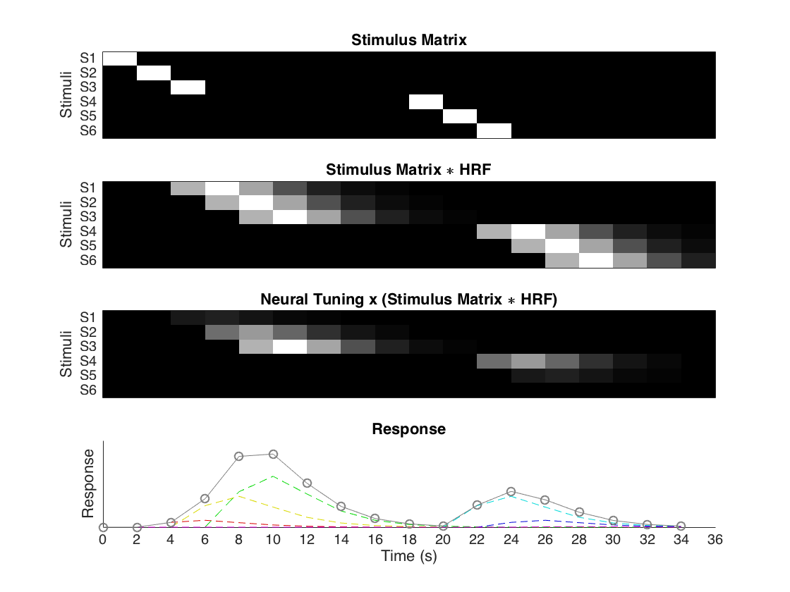
Figure 9.
- Stimulus Matrix: We have the [number of stimuli, number of volumes] Stimulus Matrix that represents which stimulus was presented when.
- Convolved Matrix = Stimulus Matrix * HRF: We then convolved the Stimulus Matrix with the HRF, creating the Convolved Matrix.
- Response = Neural Tuning x (Stimulus Matrix * HRF): This Convolved Matrix is then multipled by the neuronal tuning function, which weights how much the voxel will respond to a particular stimulus.
- BOLD Response: Finally, flattening the matrix into the time domain (collapsing by rows), the response (grey) is a linear summation of the individual responses to each stimulus (colored lines).
A note to keep in mind is the resolution of the acquired BOLD response; the BOLD response is limited to the TR length. This is indicated by the 'o' symbols.
Population Receptive Field (pRF) Modeling
Population receptive field modeling (pRF, Dumoulin & Wandell, 2008) was developed to map out receptive fields in primary visual cortex (V1) in humans. It has since be adapted to be used out other primary sensory areas such as in human primary auditory cortex (PAC; Thomas et al., 2015), although the name of the method has remained the same even when it has been used to estimate regions that do not have receptive fields.
The pRF model uses the linearity assumption that this tutorial has previous walked through. But in reference to the specific equation this tutorial has been using:
BOLD Response = Neuronal Tuning x (Stimulus Matrix * HRF)
The pRF model would be the neuronal tuning part of the equation. We estimate a pRF model independently for each voxel in our region(s) of interest. This tutorial will now continue forward, first, by estimating a pRF model for a single voxel, and then working our way to estimtaing a pRF model for multple voxels.
Estimating the pRF Model With and Without Noise in the System
Remember under the assumption that the brain is a linear system, the voxel-wise BOLD response can be interpret as:
BOLD Response = (Stimulus Matrix * HRF) x Neuronal Tuning
where (Stimulus Matrix * HRF) can also be abbreviated as the Convolved Matrix.
That means, we should be able to undo these operations with linear algebra.
modelEstimate = sum(responseMatrix) * pinv(convolvedMatrix); % without noise
However, noise in the response or in the measurement acquisition is always the case with fMRI data. This noise comes from various sources, such as distortions in the magnetic field generated by the electro-magnet and/or movement (head or respiratory) distortions by the subject. In this tutorial, we will simply add Gaussian noise 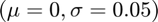 to the response.
rng(42); % setting seed responseNoise = sum(responseMatrix) + randn(size(sum(responseMatrix))) * 0.05; modelEstimateNoise = responseNoise * pinv(convolvedMatrix); % with noise
Another way to estimate the neuronal tuning function is to use a non-linear optimization method. MATLAB has a built-in function called 'fminsearch.m' that implements the Nelder-Mead method to solve non-linear optimization problems. The function 'fitcon.m' is a wrapper function to call the fitting functions, in which a function to be minimized can be passed (i.e., 'fitpRFModel') by adjusting the constrained parameters, 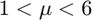 and 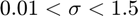. We will compare the two methods to see how well each estimates the neuronal tuning function when there is noise in the response.
params.mu = 4; % mu seed params.sigma = 1; % sigma seed [fitParams,fitErr] = fitcon('fitpRFModel', params, ... {'1<mu<6', '0.01<sigma<1.5'}, convolvedMatrix, responseNoise, opt.stimuli); [modelEstimateFit] = figure10(modelEstimate, modelEstimateNoise, fitParams, opt);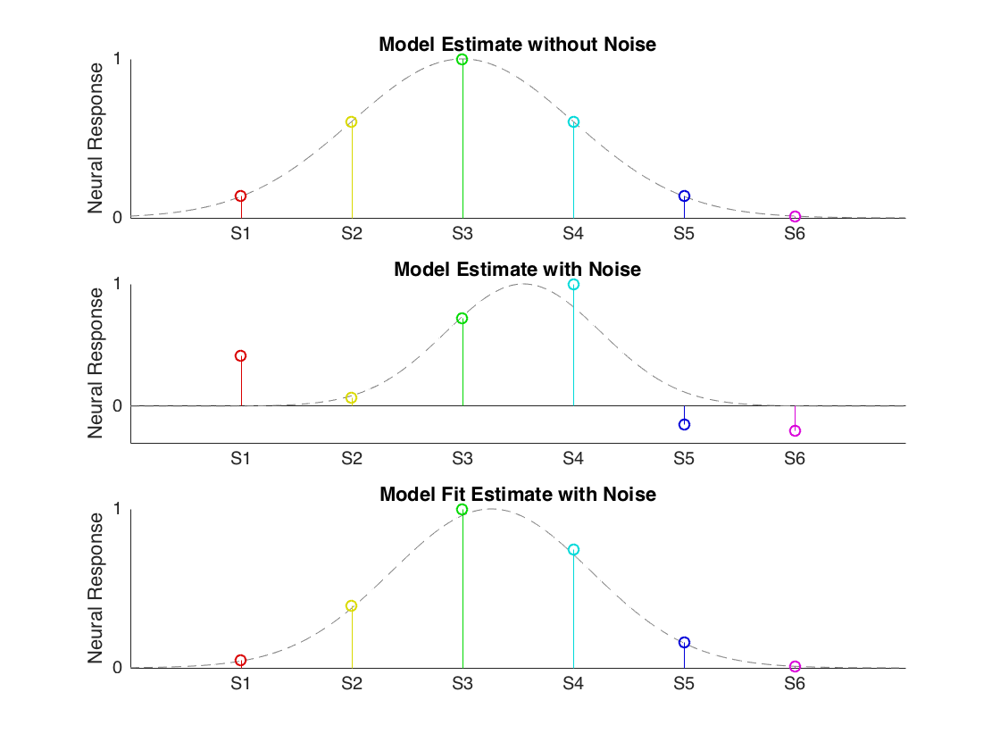
Figure 10.
Top. Estimating the neurinal tuning function by using linear algebra and no noise in the response:
Neuronal Tuning = BOLD Response * pseudoinverse(Convolved Matrix)
If the BOLD Response was not subject to noise, then we would be able to recover the true neuronal tuning function.
Middle. Estimating the neuronal tuning function by using linear algebra with noise in the response. There operation performed is the same as in the top panel:
But with the addition of a Gaussian noise , this can already drastically decrease the performance of the estimatation.
Bottom. Estimating the neuronal tuning function by using a non-linear optimization method with noise in the response.
The non-linear optimaization method is more robust to noise in the system as compared to the linear algebra solution. This is usually the method of choice for fitting pRF models in the current literature.
Inverting the Question: Decoding the Stimulus
Alright, let's go back to the initial equation that helped create the pRF model:
BOLD Response = Neuronal Tuning x (Stimulus Matrix * HRF)
We have estimated the Neuronal Tuning function (pRF model) using a non-linear optimization method. This pRF model should remain the same regardless of the stimulus paradigm that is presented.
Given that we have a pRF model, the HRF, and the BOLD Response - can we decode the Stimulus Matrix?
This will require a little bit of linear algebra to construct 'Decoding Matrix' that will perform the operation we desire. We want a decoding matrix that will, when multiplied with a vectorized Stimulus Matrix, give a predicted BOLD response. The equation looks something like this:
Predicted BOLD Response = (Decoding Matrix * HRF) x Stimulus Matrix(:)
The Predicted BOLD Response should be a column vector with dimensions of [numbers of volumes, 1].
The Stimulus Matrix, when unwrapped to be a column vector, will have a dimensions of [number of stimulus x number of volumes, 1].
Therefore, the Decoding Matrix must have the dimensions of [number of volumes, number of stimulus x number of volumes].
This creates a Decoding Matrix that will contain the pRF model estimate that is already [1, number of stimulus], repeated [number of volumes] times, through time. Lastly, we will convolved the decoding matrix, while retain the previous descrbed dimensions. If this is confusing, that is because it is. Hopefully, a figure will help clear things up.
Decoding Matrix: A Single Voxel
opt.nStim = length(opt.stimuli); % number of unique stimuli
decodeMatrix = cellzeros(cell(opt.nVols), size(modelEstimateFit));
decodeMatrix = cell2mat(celldiag(decodeMatrix, -fitErr*modelEstimateFit));
figure11(decodeMatrix, fitParams, opt);
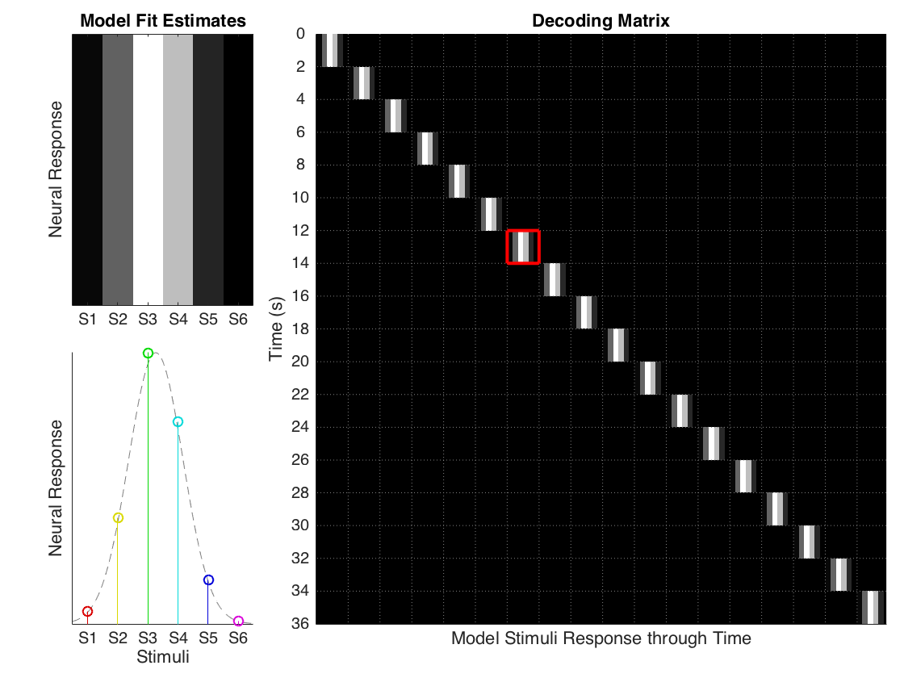 Figure 11.
Bottom Left. The estimated Gaussian neuronal tuning function from Figure 10 (bottom panel). The neuronal tuning function has an estimated and that is very close to the actual 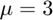 and 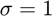.
fitParams
fitParams =
mu: 3.2607
sigma: 0.9021
Top Left. A gray scaled image representation of the estimated neuronal tuning function where brightness (whiteness) of the column represents the strength of the activation to a particular stimulus.
Right. The decoding matrix. This matrix has the dimensions of [number of volumes, number of stimuus x number of volumes]. Note the decoding matrix's similarity to an identity matrix, where along the diagonial is the same pRF model estimate repeated [number of volume] times.
Convolved Decoding Matrix: A Single Voxel
for i = 1:opt.nVols tmp = decodeMatrix(:,((opt.nStim*i)-(opt.nStim-1)):(opt.nStim*i)); tmp = convn(tmp, hrf(:)); decodeMatrix(:,((opt.nStim*i)-(opt.nStim-1)):(opt.nStim*i)) = tmp(1:opt.nVols,:); end figure12(decodeMatrix, opt);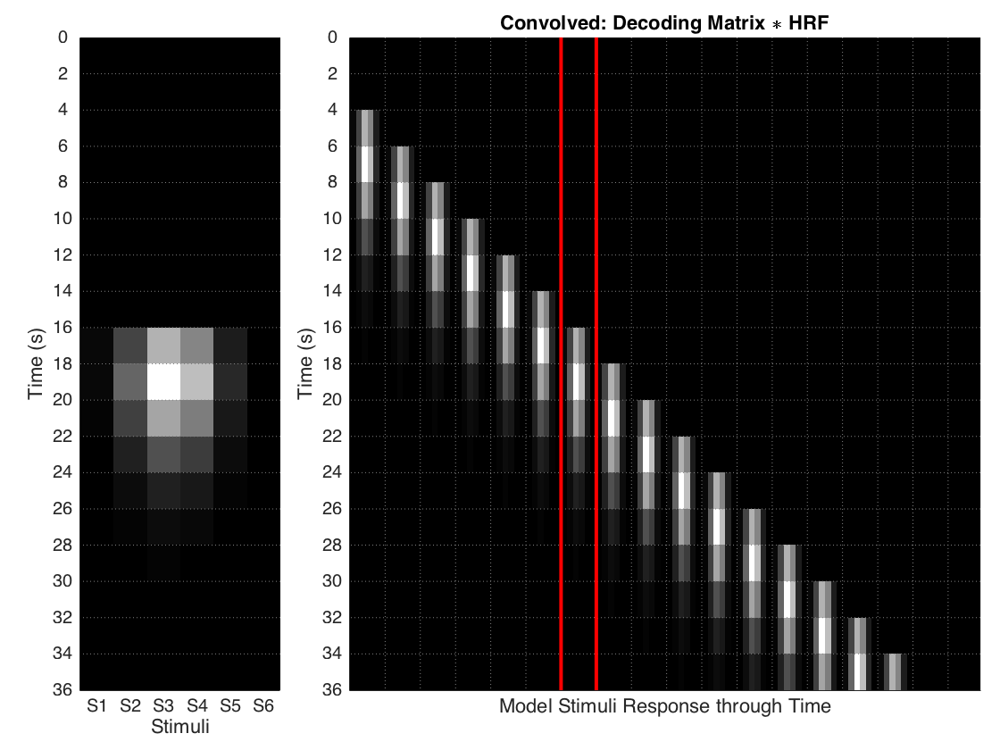
Figure 12.
Right. The convolved Decoding Matrix. Each pRF model estimate is convolved with the HRF through time. This smears the image downwards (time is on the y-axis).
Left. A zoomed in view of a single convolved pRF model estimate.
If the tutorial is running in MATLAB, you can click on the larger convolved Decoding Matrix and examine the zoomed in version of a single convolved pRF model estimate at a particular TR.
Create a New Stimulus Matrix to Decode
Because it would be circular to try and decode the Stimulus Matrix that created the pRF model was created from, we must validate the model by trying to decode a Stimulus Matrix the model has never seen before.
We will generate a new stimulus matrix by shuffling the placements of which stimulus was presented when from the old stimulus matrix. Each stimulus still only show up once and the rest placements are still identical to the previous stimulus matrix.
rng(100); % set seed testStimuli = opt.stimuli(randperm(length(opt.stimuli))); % generate new test stimulus matrix paradigm(~isnan(paradigm)) = testStimuli; stimulusMatrix = zeros(length(opt.stimuli), opt.nVols); for i = 1:length(paradigm) if ~isnan(paradigm(i)) stimulusMatrix(paradigm(i),i) = 1; end end
The actual response to this new stimulus matrix would be the as we have seen before: BOLD Response = Neuronal Tuning * (Stimulus Matrix * HRF)
convolvedMatrix = convn(stimulusMatrix, hrf);
convolvedMatrix = convolvedMatrix(:,1:opt.nVols);
actualResponse = tuning * convolvedMatrix; % actual response
And the noisy response will once again be the true response with some Gaussian noise.
responseNoise = actualResponse + randn(size(sum(actualResponse))) * 0.05;
Decoding the Test Stimulus Matrix: A Single Voxel
To decode the new stimulus matrix, we are going to iteratively go through each volume and create stimulus matrix ('stim') where only one stimulus has been placed in. Multiply that stimulus matrix to obtained a predicted response that we will then use to correlate with the response with noise. This procedure is performed for every stimulus. After each stimlus has been tested, we select the stimulus that gave the best correlation to be the decoded stimulus (for that volume). This is repeated until a decoded stimlus is obtained for every volume.
decodedParadigm = NaN(1, opt.nVols); for i = 1:opt.nVols % for every volume err = zeros(opt.nStim,1); for i2 = 1:opt.nStim % for every stimulus stim = zeros(opt.nStim, opt.nVols); stim(i2,i) = 1; predResp = decodeMatrix * stim(:); % decode! tmp = corrcoef(predResp, responseNoise(:)); % correlate prediced with actual err(i2) = tmp(1,2); % save correlation end [~,id] = max(err); % find best correlation decodedParadigm(i) = id; end
Calculate the Best Lag
Due to the poor temporal resolution of fMRI, we have the calculate the best lag for the decoded paradigm by correlating it with the actual paradigm.
To do so, we take the first half of the actual paradigm sequence (without the rests) and we correlate it at every lag step possible in the decoded paradigm.
actualParadigm1 = paradigm(1:(length(paradigm)/2)); actualParadigm1 = actualParadigm1(~isnan(actualParadigm1)); decodedParadigm1 = decodedParadigm(1:(length(decodedParadigm)/2)); lagCorr = NaN(1, (length(decodedParadigm1)-length(actualParadigm1)+1)); for i = 1:(length(decodedParadigm1)-length(actualParadigm1)+1) tmp = decodedParadigm1(i:(i+length(actualParadigm1)-1)); tmp = corrcoef(actualParadigm1(:), tmp(:)); lagCorr(i) = tmp(1,2); end [~,lag] = max(lagCorr);
The best lag is then used on the decoded paradigm to find the best starting point for all of the decoded stimlus. The rests are reintroduced into the decoded stimulus sequence where the rests were in the actual paradigm sequence.
decodedParadigm = decodedParadigm(lag:end); % move the decoded paradigm decodedParadigm(isnan(paradigm)) = NaN; % reintroduce rests
Decoded Stimulus
decodedStimulus = zeros(opt.nStim, opt.nVols); for i = 1:opt.nVols if ~isnan(decodedStimulus(i)) decodedStimulus(:,i) = opt.stimuli == decodedParadigm(i); end end figure13(stimulusMatrix, decodedStimulus, opt);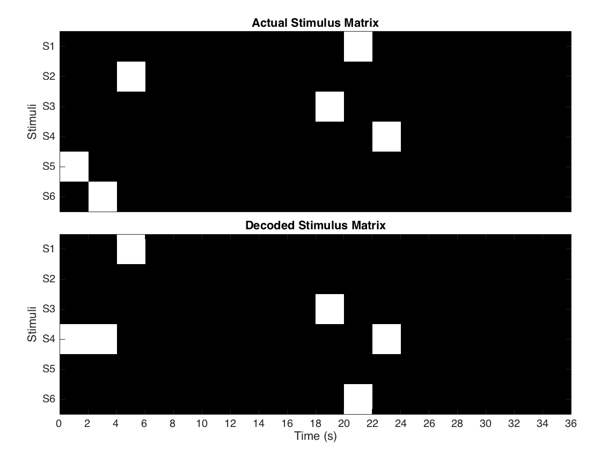
Figure 13.
Top. Actual stimulus matrix.
Bottom. Decoded stimulus matrix.
We can tell visually that this has been a poor attempt at decoding the stimulus matrix. The first 2 decoded stimuli has lumped together stimulus 5 and 6 into a stimulus 4. And the third decoded stimulus missing the mark a little by predicting stimulus 2 as a 1. The decoding did manage to get stimulus 3 and 4 correct, but completely messed up stimulus 1. Overall, the decoding was alright, but keep in mind that the noise in the 'measured' response was kept low with a of 0.05. If there were more noise in the system (as there often is), this decoding probably have failed.
Estimating a Voxel-Wise pRF Model for Multiple Voxels
It is unrealistic to expect that decoding with a single voxel would produce great results. That's why we're now including 100 voxels in an attempt to decode the stimulus sequence. This many voxels is more reasonable size as compared to commonly studied regions of interest in the brain.
rng(100); % set seed opt.nVox = 100; % number of voxels
First, we will generate the true 's and 's for each voxel. The 's will be randomly defined with the stimulus space (from 1 to 6) and the 's will be randomly sampled within the range of 0.5 to 3. This will be used to generate the actual voxel BOLD responses.
mu = min(opt.stimuli)+(max(opt.stimuli)-min(opt.stimuli)).*rand(opt.nVox,1); sigma = (min(opt.stimuli)/2)+(max(opt.stimuli)/2-min(opt.stimuli)/2).*rand(opt.nVox,1); modelMatrix = cell2mat(arrayfun(@(x,y) gaussian(x,y,opt.stimuli), mu, ... sigma, 'UniformOutput', false)); convolvedMatrix = convn(stimulusMatrix, hrf); convolvedMatrix = convolvedMatrix(:,1:opt.nVols); responseMatrix = modelMatrix * convolvedMatrix; % actual response
After simulating the true voxel time courses, random Gaussian noise is added to the response.
responseNoiseMatrix = responseMatrix + (0.05 * randn(size(responseMatrix))); % actual + noise
The response with noise is the data from which we will estimate a Gaussian pRF model parameters, and . We will once again be using the non-linear optimization method by calling 'fitcon.m' to minimize the function 'fitpRFVoxelModel.m'. This takes a little time to run on my computer, so please be patient.
params.mu = 3; % mu seed params.sigma = 1; % sigma seed for i = 1:opt.nVox % for each voxel [fitParams,fitErr] = fitcon('fitpRFVoxelModel', params, ... {'1<mu<6', '0.01<sigma<3'}, i, convolvedMatrix, ... responseNoiseMatrix, opt.stimuli); % fit the voxel % collect the outputs of the fitting voxelTuningFit(i).mu = fitParams.mu; voxelTuningFit(i).sigma = fitParams.sigma; voxelTuningFit(i).corr = -fitErr; end
We can visualize how well the models were estimated by comparing the estimated parameters with the actual parameters.
figure14(mu, sigma, voxelTuningFit);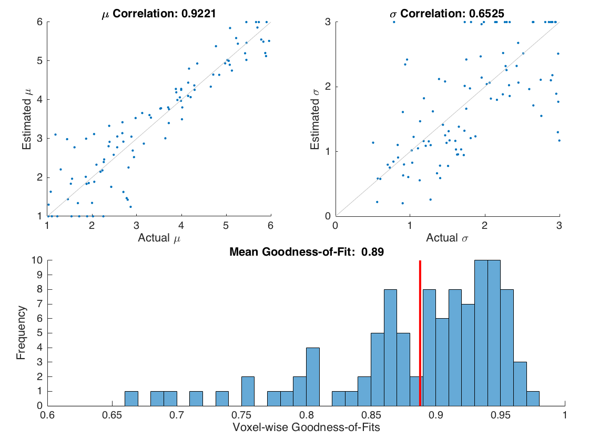
Figure 14.
Top Left. Actual 's vs. Estimated 's. Nice, high correlation.
Top Right. Actual 's vs. Estimated 's. Correlation is a little lower than the 's, but still in an acceptable range.
Bottom. Histogram of correlations between the predicted voxel time courses (given the best fitting parameters to the model) and the actual response with noise time courses for each voxel. This correlation is the goodness-of-fit measure for the model for each voxel.
Decoding Matrix: Multiple Voxels
decodeMatrix = cell(opt.nVox,1); for i = 1:opt.nVox voxelModel = voxelTuningFit(i).corr * ... gaussian(voxelTuningFit(i).mu, voxelTuningFit(i).sigma, opt.stimuli); tmpMatrix = cellzeros(cell(opt.nVols), size(voxelModel)); decodeMatrix{i} = cell2mat(celldiag(tmpMatrix, voxelModel)); end figure15(cell2mat(decodeMatrix(1:20)), opt);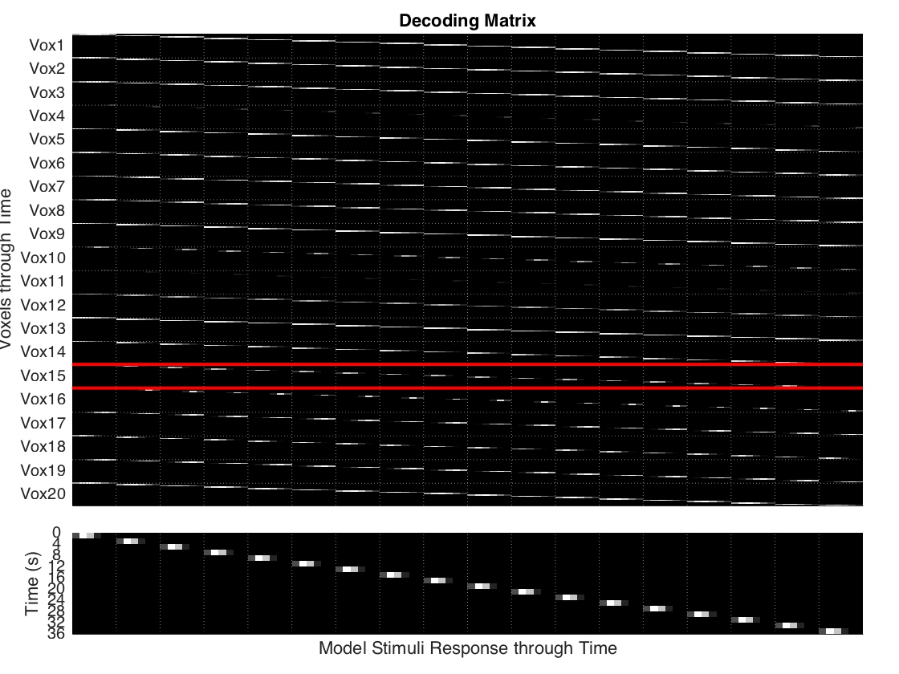
Figure 15.
For parsimony, the figure only plots the first 20 voxels out of 100.
Top. The Decoding Matrix. To create this larger decoding matrix, we indivudally create a decoding matrix like before for a single voxel, but now we add each voxel's decoding matrix row-wise together. This creates a decoding matrix that has the dimensions of: [number of voxels x number of volumes, number of stimuli x number of volumes]
Bottom. A zoomed in view of a voxel's pRF model estimate through time.
If the tutorial is running in MATLAB, you can click on the larger Decoding Matrix to change which voxel is in the zoomed in bottom graph.
Convolved Decoding Matrix: Multiple Voxels
for i = 1:opt.nVox for i2 = 1:opt.nVols tmp = decodeMatrix{i}(:,((opt.nStim*i2)-(opt.nStim-1)):(opt.nStim*i2)); tmp = convn(tmp, hrf(:)); decodeMatrix{i}(:,((opt.nStim*i2)-(opt.nStim-1)):(opt.nStim*i2)) = ... tmp(1:opt.nVols,:); end end figure16(cell2mat(decodeMatrix(1:20)), opt);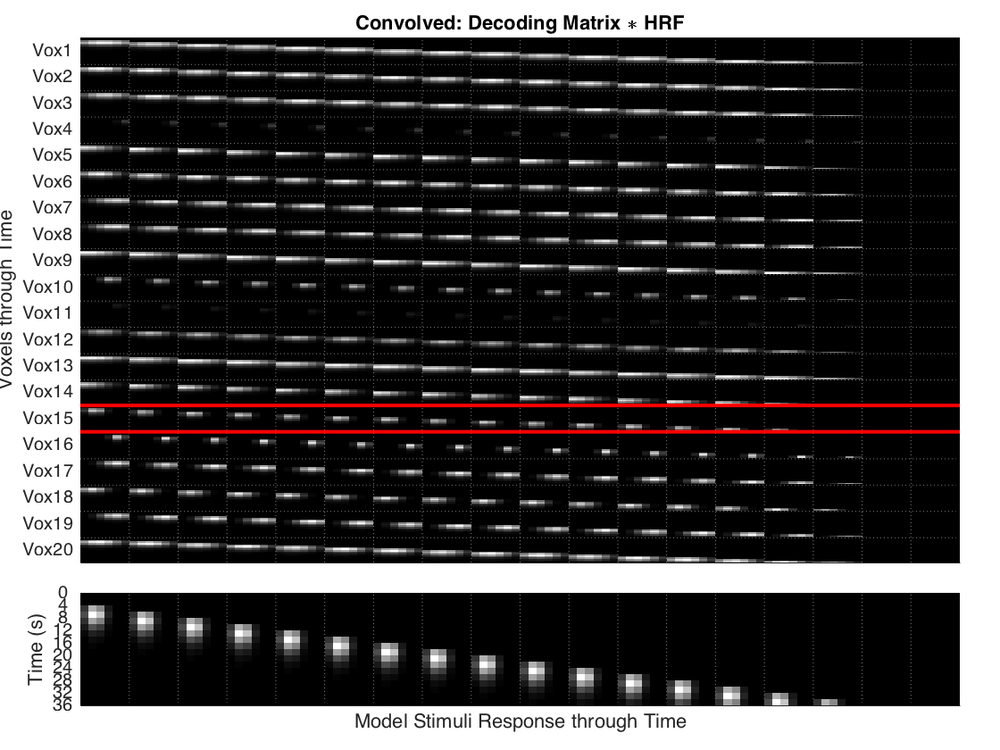
Figure 16.
For parsimony, the figure only plots the first 20 voxels out of 100.
Top. The convolved Decoding Matrix. Each voxel's pRF model estimate is convolved with the HRF through time. This smears the image downwards (time is on the y-axis), but within each voxel's 'row'.
Bottom. A zoomed in view of a voxel's convolved pRF model estimate through time.
If the tutorial is running in MATLAB, you can click on the larger Convolved Decoding Matrix to change which voxel is in the zoomed in bottom graph.
Decoding the Test Stimulus Matrix: Multiple Voxel
To decode the new stimulus matrix, even with multiple voxels, is same process. We will iteratively step through each volume and each stimulus to find the stimulus that will give the best correlation to the response with noise. The only step that is different than trying to decode with a single voxel, is that we will reshape the predicted response back into a [number of voxels, number of volumes] matrix, before unwrapping it into a column vector for correlation.
decodeMatrix = cell2mat(decodeMatrix); decodedParadigm = NaN(1, opt.nVols); for i = 1:opt.nVols err = zeros(opt.nStim,1); for i2 = 1:opt.nStim stim = zeros(opt.nStim, opt.nVols); stim(i2,i) = 1; predResp = decodeMatrix * stim(:); predResp = reshape(predResp, opt.nVols, opt.nVox)'; % reshape! tmp = corrcoef(predResp(:), responseNoiseMatrix(:)); err(i2) = tmp(1,2); end [~,id] = max(err); decodedParadigm(i) = id; end
Calculate the Best Lag
Once again, calculating the best lag.
decodedParadigm1 = decodedParadigm(1:(length(decodedParadigm)/2)); lagCorr = NaN(1, (length(decodedParadigm1)-length(actualParadigm1)+1)); for i = 1:(length(decodedParadigm1)-length(actualParadigm1)+1) tmp = decodedParadigm1(i:(i+length(actualParadigm1)-1)); tmp = corrcoef(actualParadigm1(:), tmp(:)); lagCorr(i) = tmp(1,2); end [~,lag] = max(lagCorr); decodedParadigm = decodedParadigm(lag:end); decodedParadigm(isnan(paradigm)) = NaN;
Decoded Stimulus: Multiple Voxels
decodedStimulus = zeros(opt.nStim, opt.nVols); for i = 1:opt.nVols if ~isnan(decodedStimulus(i)) decodedStimulus(:,i) = opt.stimuli == decodedParadigm(i); end end figure17(stimulusMatrix, decodedStimulus, opt);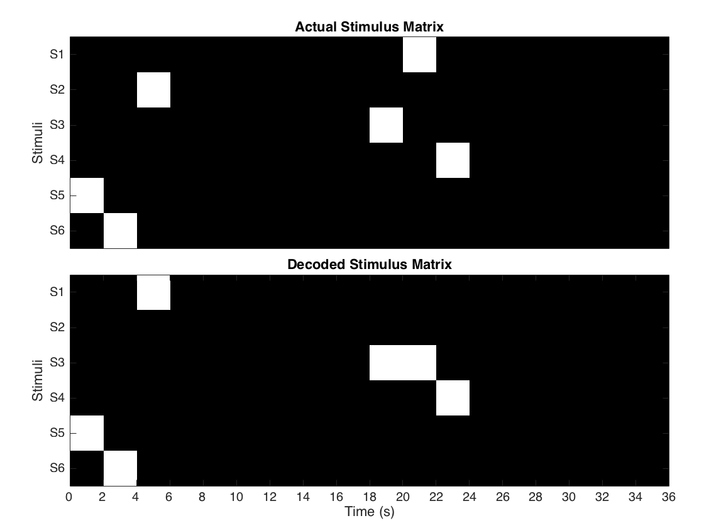
Figure 17.
Top. Actual stimulus matrix.
Bottom. Decoded stimulus matrix.
We can tell visually that this has been a better attempt at decoding the stimulus matrix. The first 2 decoded stimuli have been separated (as compared with the single voxel decoding). But the third decoded stimulus still misss the mark a little by predicting stimulus 2 as a 1. The decoding did manage to get stimulus 3 and 4 correct again, and has managed to only barely missed decoding stimulus 1 as 3. Overall, the decoding was better, but again keep in mind that the noise in the 'measured' response was kept low with a of 0.05. If there were more noise in the system (as there often is), this decoding probably have been worse.
Conclusion
After walking through this tutorial, we have a better understanding of how the pRF model is estimated and how we can take the estimated pRF model to try and decode the stimlus matrix.
A few caveats about this method and the assumptions it uses. This method is extremely sensitive to noise in the measured response. Too much noise and an accurate pRF model will not be able to be fitted even though we are using a non-linear optimization method. Too much noise and decoding the stimulus will also be practically impossible. This method has been tested well in primary sensory areas (i.e., primary visual cortex and primary auditory cortex); however, as we move towards higher order areas, the assumption of linearity might not hold. These are all points to think about as this method develops.
However, there are benefits to using this method. A pRF model is able to characterize a voxel's 'preferred' stimulus through parameterization in an arbitray stimlus space defined by the researcher. This leads to future research questions that could find the paramaterized features a specific region in the brain would respond to. This method also makes it possible to compare differences in characterization between groups and regions (within a subject). And one the decoding side of the method, it provided a stimple validation test for the estimated pRF model. But, the strongest benefit to this method is that it provides a linking model between neuronal responses to behavioral and perceptual experience.
References
Dumoulin, S. O., & Wandell, B. A. (2008). Population receptive field estimates in human visual cortex. Neuroimage, 39(2), 647-660.
Thomas, J. M., Huber, E., Stecker, G. C., Boynton, G. M., Saenz, M., & Fine, I. (2015). Population receptive field estimates of human auditory cortex. NeuroImage, 105, 428-4